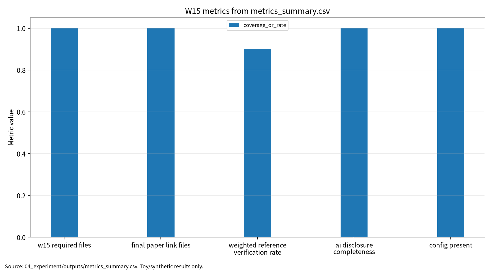

| 항목 | 내용 |
|---|---|
| 주차 | W15 |
| 작성자 | 박영세 |
| 학번 | 26200122 |
| 보고서 제목 | 연구평가·재현성·설명가능성(XAI)·논문 구성 |
| 작성일 | 2026-06-23 |
| 보완일 | 2026-06-23 |
| 문서 상태 | 제출용 보고서 |
| 기준 산출물 | 04_experiment/outputs/run_log.md |
| ## 1. 한 문장 요약 |
W15는 AI 보안 연구의 성능 주장, 참고문헌 검증, 실행 로그, AI 활용 고지, 기말논문 표·그림을 제출 가능한 evidence chain으로 묶는 감사 주차다.
본 실습은 모델 성능이나 공격 성공률을 측정하는 실험이 아니라, 기말논문 제출 직전의 재현성·참고문헌·AI 활용 고지·제출 산출물 준비 상태를 점검하는 local repository metadata 기반 안전 감사이다. 따라서 결과는 W15 필수 산출물 존재 여부, 기말논문 연결 파일 존재 여부, DOI/URL 검증 상태, AI 활용 고지 완성도만을 의미하며, LLM 또는 XAI 모델의 성능으로 해석하지 않는다.
| 구분 | 핵심 내용 |
|---|---|
| 평가 | LLM evaluation은 평가 대상, benchmark, 평가 방식을 분리한다[1]. |
| 재현성 | ML lifecycle assurance는 데이터, 모델, 검증, 배포 단계별 evidence chain을 요구한다[2]. |
| XAI | XAI 연구는 설명의 fidelity, stability, user trust를 함께 고려해야 한다[3]. |
| Responsible XAI | 설명가능성은 transparency뿐 아니라 privacy, fairness, accountability와 연결된다[4]. |
| Concept-based XAI | concept 단위 설명은 human evaluation 가능성을 높이지만 concept leakage와 비용 문제가 있다[5]. |
| 이슈 | 제출 전 점검 |
|---|---|
| Benchmark contamination | 평가셋 출처와 노출 가능성 명시 |
| Hidden test leakage | hidden test 보호와 반복 질의 위험 명시 |
| Fabricated citation | DOI/URL/로컬 PDF 검증표 작성 |
| Explanation leakage | XAI 공개 범위와 human review 필요 |
| Missing AI disclosure | AI 활용 고지서 작성 |
| ID | 논문 | DOI/URL 상태 |
|---|---|---|
| P01 | A Survey on Evaluation of Large Language Models | 확인: 10.1145/3641289; ACM TIST |
| P02 | Assuring the Machine Learning Lifecycle | 확인: 10.1145/3453444; ACM CSUR |
| P03 | Explainable AI: Core Ideas, Techniques, and Solutions | 부분 확인: 10.1145/3561048; 로컬 PDF는 Mersha et al. 관련 보조 문헌 |
| P04 | Explainable Artificial Intelligence (XAI) | 확인: 10.1016/j.inffus.2019.12.012 |
| P05 | Concept-based Explainable Artificial Intelligence | 확인: 10.1145/3774643, arXiv 2312.12936; 권호/issue 최종 확인 필요 |
P01은 평가오염 근거, P02는 재현성 근거, P04는 Responsible XAI 근거, P05는 concept-based explanation 근거다. P03은 DOI metadata는 확인했지만 로컬 PDF가 지정 논문과 다르므로 관련 보조 문헌 원문 상태를 숨기지 않는다.
| 항목 | 내용 |
|---|---|
| 연구문제 | LLM/RAG 생명주기에서 prompt injection, benchmark contamination, privacy leakage가 발생하는 단계와 최소 평가항목 정의 |
| 평가 지표 | reference verification rate, reproducibility evidence coverage, AI disclosure completeness |
| 제외 범위 | 실제 개인정보, 실제 서비스 침해, 무단 API 공격, 실제 benchmark 오염 실험 |
| 점검 항목 | 결과 | 상태 |
|---|---|---|
| W15 필수 산출물 | 47/47 | complete |
| 기말논문 연결 파일 | 9/9 | complete |
| 로컬 PDF | 5 | complete |
| DOI 확인 | 4 | complete |
| DOI 부분 확인 | 1 | partial |
| DOI 미검증 | 0 | complete |
| 가중 참고문헌 검증률 | 0.90 | partial |
| AI 활용 고지 완성도 | 11/11 | complete |
| config 파일 존재 | 1 | complete |
| 기록된 seed | 42 | complete |
그림 7. W15 metrics summary chart

출처: 04_experiment/outputs/metrics_summary.csv. 이 그래프는 공개 toy/synthetic 산출물 기반이며 실제 공격 성능이나 운영 환경 성능으로 일반화하지 않는다.
AI 도구는 문헌 요약, 코드 점검, 문장 구조화, 그래프 생성 보조에 사용하였다. 모든 DOI/URL, 실험 수치, 본문 인용, 결론은 작성자가 outputs 파일과 로컬 참고문헌 검증표를 대조하여 검증한다.
표. W15 AI 도구 활용 및 검증 기록
| 항목 | 내용 |
|---|---|
| 사용 도구명 | Codex, ChatGPT 계열 도구 |
| 사용 일자 | 2026-06-23 |
| 사용 목적 | 문헌 요약 정리, 보고서 구조화, 안전한 toy/synthetic 실험 결과 표기 점검, 그래프 생성 보조, 제출 전 체크리스트 정리 |
| 주요 프롬프트 요약 | 주차별 제출 보고서 보완, 참고문헌 검증표 정리, metrics_summary.csv 기반 그래프 생성, AI 활용 고지 작성 |
| AI 산출물 반영 위치 | 07_week_submission/w15_submission_report.md, 07_week_submission/assets/w15_metric_chart.png, 05_ai_worklog/ai_disclosure_draft.md |
| 본인 수정 내용 | 주차별 문헌 상태 확인, 실험 수치와 outputs 대조, 안전 범위와 한계 문장 확인, 최종 제출 전 미확정 문헌 분리 |
| 사실관계 검증 방법 | 01_papers/paper_list.md, 01_papers/doi_check.md, 05_references/doi_index.md, 강의계획서 문헌표 대조 |
| 참고문헌 검증 방법 | 제목, 저자, 연도, 학술지/학회, DOI/URL, 본문 인용번호와 참고문헌 목록 대응 확인 |
| 실험결과 검증 방법 | 04_experiment/outputs/metrics_summary.csv, results.json, run_log.md의 수치와 보고서 표기 대조 |
| 최종 책임 확인 | AI 산출물은 초안 보조이며 최종 제출자는 원고 내용, 인용, 실험결과, 연구윤리 책임을 확인한다. |
최종 주제는 LLM/RAG 기반 AI 시스템의 생명주기별 보안 위협과 재현성 중심 평가 프레임워크 연구다. W15는 연구방법, 평가방법, 보안적 함의, 참고문헌 검증표, AI 활용 고지서에 반영된다.
| 항목 | 초안 |
|---|---|
| 국문 제목 | LLM/RAG 기반 AI 시스템의 생명주기별 보안 위협과 재현성 중심 평가 프레임워크 연구 |
| 영문 제목 | A Lifecycle-Based Security Threat and Reproducibility-Centered Evaluation Framework for LLM/RAG-Based AI Systems |
| 연구방법 | 문헌분석, 위협모형, W15 산출물 감사, 한계분석 |
| 키워드 | LLM 보안, RAG, 재현성, 참고문헌 검증, AI 활용 고지, 벤치마크 오염 |
SCI 확장을 위해서는 공개 benchmark contamination audit, 공개 문서 기반 RAG 실험, privacy leakage benchmark, XAI stability metric, 반복 seed와 confidence interval, 공개 artifact release가 필요하다.
발표자료는 09_presentation/에 정리되어 있다. 핵심 메시지는 “평가와 설명은 결과가 아니라 증거이며, 증거는 DOI, config, seed, log, output, AI disclosure와 함께 남을 때 신뢰할 수 있다”이다.
| 인용번호 | 문헌 | 상태 |
|---|---|---|
| [1] | Chang et al., A Survey on Evaluation of Large Language Models | 확인 |
| [2] | Ashmore et al., Assuring the Machine Learning Lifecycle | 확인 |
| [3] | Dwivedi et al., Explainable AI: Core Ideas, Techniques, and Solutions | 부분 확인, 지정 논문 원문 확인 필요 |
| [4] | Arrieta et al., Explainable Artificial Intelligence (XAI) | 확인 |
| [5] | Poeta et al., Concept-based Explainable Artificial Intelligence | 확인, 권호/issue 최종 확인 필요 |
| 점검 항목 | 상태 | 비고 |
|---|---|---|
| 통합보고서 최종본 작성 | 완료 | 06_report/final/ |
| 로컬 감사 outputs 생성 | 완료 | 04_experiment/outputs/ |
| 기말논문 표 1개 이상 | 완료 | 04_final_paper/05_draft/paper_draft.md |
| 기말논문 그림 1개 이상 | 완료 | Mermaid 그림 1 |
| 국내 논문 3편 이상 | 확인 필요 | 허위 인용 방지를 위해 미확정 |
| P03 지정 논문 원문 PDF | 확인 필요 | 현재 로컬 PDF 표기 차이 |
| PDF 저작권/보관 정책 | 확인 필요 | PDF 원문은 Git 추적 해제 대상으로 분류했고 보관 정책을 문서화했다 |